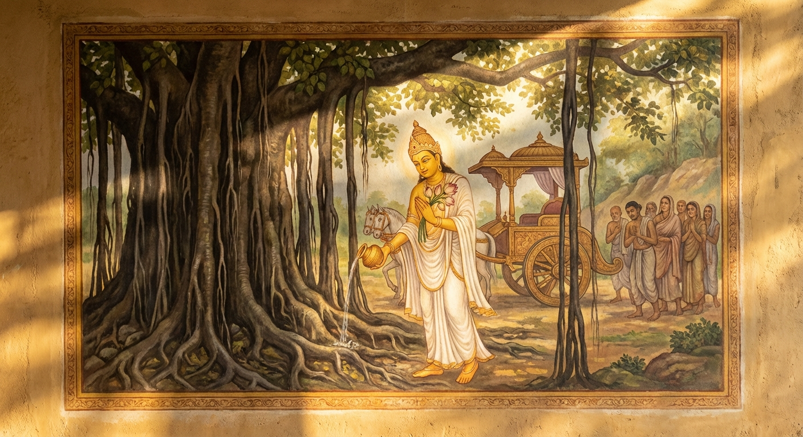

10. දුම්මේධ ජාතකය (50)
“දුම්මෙධානං” යන මේ ජාතකය බුදුරජාණන් වහන්සේ ජේතවනාරාමයේ වැඩවසන සමයෙහි ලෝකාර්ථ චර්යාව (ලෝකයාට යහපත කිරීමේ පිළිවෙත) අරබයා වදාළ සේක. එය දොළොස්වන නිපාතයේ එන මහාකණ්හ ජාතකයේ (ජාතක අංක 1.12.61 ආදියෙහි) විස්තර වනු ඇත.
අතීතයේ බරණැස් නුවර බ්රහ්මදත්ත රජු රාජ්යය කරන කල්හි, බෝසතාණන් වහන්සේ ඒ රජුගේ අගමෙහෙසියගේ කුසෙහි පිළිසිඳ
ගත්හ. මවු කුසින් බිහි වූ උන්වහන්සේට නම් තබන දිනයේදී ‘බ්රහ්මදත්ත කුමාරයා’ යැයි නම් කළහ. කුමාරයා දහසය
හැවිරිදි වියට පත්ව, තක්ෂිලාවට ගොස් ශිල්ප හදාරා, ත්රිවේදයෙහි පරතෙරට ගොස්, දහඅටක් වූ විද්යාස්ථානයන්හි
නිපුණත්වයට පත් වූහ. ඉක්බිති පියාණෝ ඔහුට යුවරජ තනතුර ලබා දුන්හ.
එකල බරණැස් නුවර වැසියෝ දෙවියන් අදහන්නෝ
(දේවතා මංගලික වූවෝ) වූහ. ඔවුහු දෙවියන් වදිති. බොහෝ එළුවන්, බැටළුවන්, කුකුළන්, ඌරන් ආදී සතුන් මරා නානාප්රකාර
මල් සුවඳින් ද, මස් සහ ලේවලින් ද බිලි පූජා පවත්වති. බෝසතාණන් වහන්සේ මෙසේ සිතූහ: “දැන් සත්ත්වයෝ දේව භක්තිකයෝ
වී බොහෝ සත්ත්ව ඝාතන කරති. මහජනයා බොහෝ දුරට අධාර්මික ක්රියාවන්හිම පිහිටා සිටිති. මම පියාගේ ඇවෑමෙන් රාජ්යය
ලබා, එකදු අයෙකුවත් පීඩාවට පත් නොකර, උපායකින්ම මේ සත්ත්ව ඝාතන කිරීමට ඉඩ නොදෙන්නෙමි.”
එක් දිනක්
උන්වහන්සේ රථයට නැගී නගරයෙන් පිටතට යන විට, එක් විශාල නුග ගසක් අසල රැස්ව සිටි මහජනයා දුටු සේක. එම ගසෙහි උපන්
දේවතාවා ඉදිරියෙහි දූ පුතුන්, යස ඉසුරු ආදී තමන් කැමති දෑ පතමින් ඔවුහු සිටියහ. බෝසතාණන් වහන්සේ එය දැක රථයෙන්
බැස, ඒ ගස වෙත ගොස්, සුවඳ මලින් පුදා, පැන් ඉස, ගස පැදකුණු කොට, දේව භක්තිකයෙකු මෙන් දෙවියන් නැමද රථයට නැගී
නගරයට පිවිසියහ. එතැන් පටන් උන්වහන්සේ මේ ආකාරයෙන්ම වරින් වර එහි ගොස් දේව භක්තිකයෙකු මෙන් පූජා පවත්වති.

පසු කලෙක පියාගේ ඇවෑමෙන් රාජ්යයට පත් වූ බෝසතාණන් වහන්සේ, සතර අගතියෙන් තොරව, දස රාජ ධර්මය නොකළඹවා ධාර්මිකව
රාජ්යය කරවමින් මෙසේ සිතූහ: “මගේ මනදොළ මුදුන් පත් විය. මම රජකමෙහි පිහිටියෙමි. මම පෙර යම් අර්ථයක් (උපායක්)
සිතුවෙම් ද, දැන් එය මුදුන් පමුණුවා ගන්නෙමි.”
ඉන්පසු ඇමතිවරුන් ද, බ්රාහ්මණ ගෘහපතීන් ආදීන් ද රැස් කරවා
ඔවුන් ඇමතූහ:
“භවත්නි, මා කවර හේතුවකින් රාජ්යයට පත් වූයේදැයි තොපි දන්නහුද?”
“නොදනිමු, දේවයන්
වහන්ස.”
“මා අසවල් නුග රුක සුවඳ මල් ආදියෙන් පුදා, දෑත් එක්කොට වන්දනා කරනු තොපි පෙර දැක තිබේද?”
“එසේය,
දේවයන් වහන්ස.”
“එකල මම මෙවන් ප්රාර්ථනාවක් කළෙමි: ‘ඉදින් මට රාජ්යය ලැබෙන්නේ නම් ඔබට බිලි පූජාවක්
කරන්නෙමි.’ ඒ දේවතාවාගේ ආනුභාවයෙන් මට මේ රාජ්යය ලැබුණි. දැන් මම ඔහුට බිලි පූජාව කරන්නෙමි. තොපි ප්රමාද නොවී
වහාම දේවතාවාට බිලි පූජාව සූදානම් කරව්.”
“දේවයන් වහන්ස, ඒ සඳහා කුමක් කුමක් ගනිමු ද?”
“භවත්නි, මම
දේවතාවාට ආයාචනා කරද්දී, ‘මගේ රාජ්යයෙහි යමෙක් ප්රාණඝාතය ආදී පස් පව් කරමින් දස අකුසල කර්ම පථයන් සමාදන් වී
හැසිරෙත් ද, ඔවුන් මරා ඔවුන්ගේ අතුණුබහන්, මස්, ලේ ආදියෙන් බිලි පූජාව කරන්නෙමි’යි භාර වුණෙමි. එබැවින් තොපි
නුවර පුරා මෙසේ අණ බෙර හසුරුවව්:
‘අපගේ රජතුමා යුවරජ කාලයේදීම මෙසේ භාරයක් විය: ඉදින් මම රාජ්යයට පත්
වුවහොත්, මගේ රාජ්යයෙහි යම් දුස්සීල කෙනෙක් වෙත් ද, ඒ සියල්ලන් මරා බිලි පූජාවක් කරන්නෙමි. දැන් රජතුමා පස්විධ
දුස්සීල කර්ම සහ දසවිධ අකුසල කර්ම පථ සමාදන් වී හැසිරෙන දුස්සීලයන් දහසක් මරා, ඔවුන්ගේ හෘද මාංශ ආදිය ගෙන්වා
දේවතාවාට බිලි පූජාවක් කිරීමට කැමති වෙයි. නගරවාසීන් මේ බව දැන ගනිත්වා!’”
මෙසේ පවසා, “දැන් පටන් යමෙක්
දුස්සීල කර්මවල යෙදෙත් ද, ඔවුන් දහසක් මරා යාගයක් කොට භාරයෙන් නිදහස් වන්නෙමි” යි මේ කාරණය ප්රකාශ කරමින්
උන්වහන්සේ මෙම ගාථාව වදාළ සේක.
“නුවණ නැත්තවුන් දහසකින් යාගයක් කිරීමට මම දෙවියන්ට භාර වීමි. දැන් බොහෝ ජනයා අධාර්මික බැවින්, මම දැන් ඒ යාගය කරන්නෙමි.”
එහි ‘දුම්මෙධානං සහස්සෙන’ යනු, “මේ ක්රියාව කිරීම සුදුසුය, මෙය නුසුදුසුය” යි නොදන්නා බැවින් හෝ දස අකුසල
කර්ම පථයන්හි සමාදන් වී හැසිරෙන බැවින් හෝ දූෂිත වූ නුවණ ඇත්තෝ ‘දුම්මෙධ’ (නුවණ නැත්තෝ) නම් වෙති; එබඳු වූ
ප්රඥාව රහිත බාල පුද්ගලයන් ගණන් කර ගන්නා ලද දහසකින් (යාගය කරමි) යන්නයි.
‘යඤ්ඤො මෙ උපයාචිතො’ යනු,
මා විසින් දේවතාවා වෙත එළඹ “මෙසේ යාගයක් කරන්නෙමි” යි යාගයක් ඉල්ලා සිටින (භාර වන) ලදී.
‘ඉදානි ඛොහං
යජිස්සාමි’ යනු, ඒ මම මේ භාර වීම හේතුවෙන් රාජ්යය ලද හෙයින් දැන් යාගය පවත්වන්නෙමි. කවර හෙයකින් ද?
දැන් ‘බහු අධම්මිකො ජනො’ එනම් ජනයා බොහෝ සෙයින් අධාර්මික ය; එබැවින් දැන්ම ඔවුන් අල්ලා ගෙන බිලි පූජාව
කරන්නෙමි යි අදහසයි.
ඇමතිවරු බෝසතාණන් වහන්සේගේ වචනය අසා “යහපයි, දේවයන් වහන්ස” යි කියා දොළොස් යොදුන් බරණැස් නුවර අණ බෙර හැසිරවූහ. බෙර හඬින් කියැවුණු ඒ අණ අසා එක් දුස්සීල කර්මයක් හෝ සමාදන් වී සිටි එකදු පුරුෂයෙක්වත් නොවුණි. මෙසේ බෝසතාණන් වහන්සේ යම් තාක් කල් රාජ්යය කළෝ ද, ඒ තාක් කල් පස් පව් හෝ දස අකුසල් අතුරින් එකදු කර්මයක් හෝ කරන එක් පුද්ගලයකු හෝ දක්නට නොලැබුණි. මෙලෙස බෝසතාණන් වහන්සේ එකදු පුද්ගලයකුටවත් පීඩා නොකර, සකල රාජ්යවාසීන්ම සීලයෙහි පිහිටුවා, තමන් වහන්සේ ද දානාදී පින්කම් කොට ජීවිත අවසානයෙහි තමන්ගේ පිරිස ද සමඟින් දෙව්ලොව පුරවමින් ස්වර්ගස්ථ වූහ.
ශාස්තෲන් වහන්සේ, “මහණෙනි, තථාගතයන් වහන්සේ ලෝකයාට වැඩ පිණිස හැසිරෙන්නේ දැන් පමණක් නොවෙයි, පෙරත් එසේ හැසිරුණාහුමය” යි වදාරා, මේ ධර්ම දේශනාව ගෙනහැර දක්වා, පූර්වාපර සන්ධි ගළපා ජාතකය නිමවා වදාළ සේක. “එකල පිරිස දැන් බුදු පිරිස වූහ. බරණැස් රජු නම් මම ම වීමි.”
දසවන දුම්මෙධ ජාතක වර්ණනාවයි.
පස්වැනි වූ අත්ථකාම වර්ගයයි.
එහි උද්දානය (මාතෘකා එකතුව) මෙසේය:
- ලෝසක තිස්ස ජාතකය
- කපෝත ජාතකය
- වේළුක ජාතකය
- මකස ජාතකය
- රෝහිණී ජාතකය
- ආරාමදූසක ජාතකය
- වාරුණීදූසක ජාතකය
- වේදබ්බ ජාතකය
- නක්ඛත්ත ජාතකය
- දුම්මෙධ ජාතකය යැයි දසයකි.
පළමු පණස (ජාතක පනහ) නිමියේය.